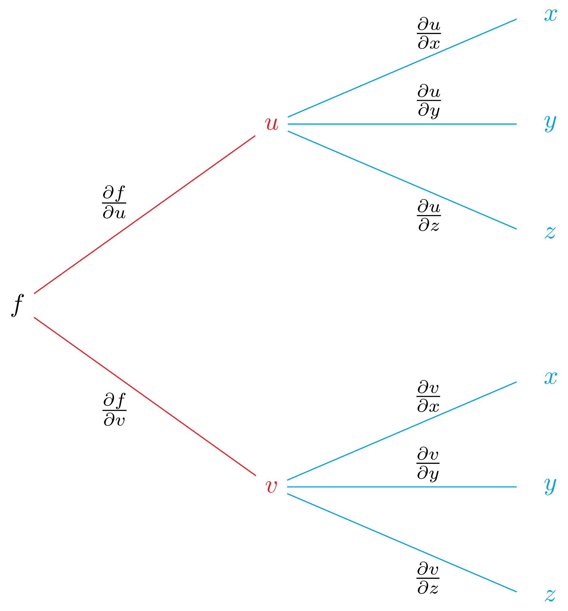
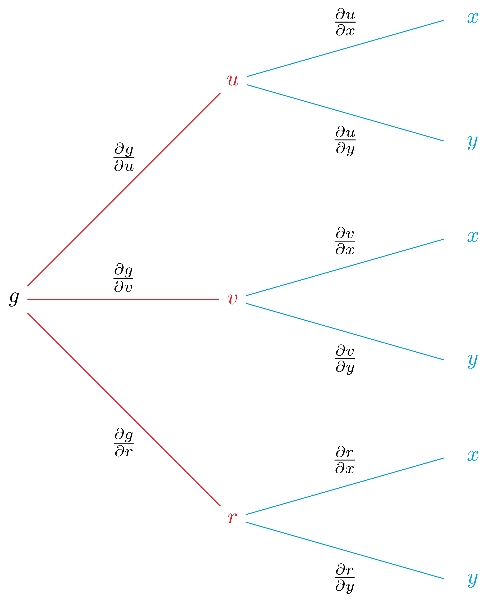

3.2 The chain rule
Here, we extend (3.2) to functions of several variables. In this setting, the chain rule has several forms, and the form will depend on how many variables are involved.
The tree diagram in Figure 3.2 is a device for remembering the chain rule of (3.3). We first draw branches from \(f\) to \(u\) and \(v\), to indicate that \(f\) is a function of \(u\) and \(v\). Since \(u\) and \(v\) are a functions of \(t\), next we draw branches from \(u\) to \(t\) and from \(v\) to \(t\). In this diagram we have also highlighted the various partial derivatives that are involved for the given variables.
FIGURE 3.2: Tree diagram for (3.3), where \(u\) and \(v\) are intermediate variables and \(t\) is an independent variable.
Show/hide image source code
%%Image generated using \LaTeX package *tikz*.%%
\documentclass[convert={density=600,outext=.png}]{standalone}
\include{preview}
\usepackage[pdftex,active,tightpage]{preview}
\usepackage{amsmath}
\usepackage[dvipsnames]{xcolor}
\usepackage{tikz}
\usetikzlibrary{matrix}
\usetikzlibrary{decorations.markings}
\usetikzlibrary{arrows,shapes,snakes,automata,backgrounds,petri}
\usepackage{pgfplots}
%
\begin{document}
\begin{preview}
%% TIKZ_CODE %%
%
\tikzstyle{level 1}=[level distance=3.5cm, sibling distance=3.5cm]
\tikzstyle{level 2}=[level distance=3.5cm, sibling distance=2cm]
%
\begin{tikzpicture}[grow=right]
\node {$f$}
child {
node[Red] {$v$}
child {
node[label=right:{$\color{Cerulean}t$}] {}
edge from parent [Cerulean]
node[above] {}
node[below=0.25em,black] {$\frac{\partial v}{\partial t}$}
}
edge from parent [Red]
node[above] {}
node[below=0.75em, left=0.25em, black] {$\frac{\partial f}{\partial v}$}
}
child {
node[Red] {$u$}
child {
node[label=right:{$\color{Cerulean}t$}] {}
edge from parent [Cerulean]
node[above] {}
node[above=0.25em,black] {$\frac{\partial u}{\partial t}$}
}
edge from parent [Red]
node[above=0.75em, left=0.25em, black] {$\frac{\partial f}{\partial u}$}
node[below] {}
};
\end{tikzpicture}
\end{preview}
\end{document}Next, we add the products of the corresponding pairs of partial derivatives to obtain (3.3).
Exercise 3.3 Let \(f \, \colon \, \mathbb{R}^{2} \to \mathbb{R}\) be defined by \(f(x, y) = \mathrm{e}^{xy}\) and suppose that \(x\) and \(y \, \colon \, \mathbb{R} \to \mathbb{R}\) are defined by \(x(t) =t^2\) and \(y(t) = t^3\). Using the chain rule given in (3.3), find the derivative of \(f\) with respect to \(t\).
Show/hide solution
Solution.
Note, after applying the chain rule we substituted for \(x\) and \(y\), thereby expressing the derivative of \(f\) with respect to \(t\) as a function of \(t\). This is done to emphasise the fact that \(f\) is a composite function of the variable \(t\).
The proof of the equality stated in (3.3) follows in three steps. Note, here, we implicitly assume that \((u, v)\) is in the interior of the domain of \(f\).
- First, is to show that\[\begin{align} \frac{\partial}{\partial v} f(u, v) \frac{\mathrm{d}}{\mathrm{d}t} v(t) = \lim_{h \to 0} \frac{f(u(t), v(t+h)) - f(u(t), v(t))}{h}. \tag{3.4} \end{align}\]
Show/hide proof of (3.4)
Proof.
For \(k \in \mathbb{R}\) with \((u, v + k)\) in the interior of \(\mathrm{Dom}(f)\), set\[\begin{align*} E(k) = \begin{cases} 0 & \text{if} \; k = 0,\\[0.5em] \displaystyle \frac{f(u, v + k) - f(u, v)}{k} - \frac{\partial}{\partial v} f(u, v) & \text{otherwise}. \end{cases} \end{align*}\]By definition, \(\lim_{k \to 0} E(k) = 0\), meaning that \(E\) is continuous at zero, and\[\begin{align*} f(u, v + k) - f(u, v) = \left( \frac{\partial}{\partial v} f(u, v) + E(k) \right) k. \end{align*}\]Setting \(k = k_{h} = v(t + h) - v(t)\), for \(h \in \mathbb{R}\) with \(t + h \in \mathrm{Dom}(v)\), we obtain that\[\begin{align*} f(u(t), v(t + h)) - f(u(t), v(t)) = \left( \frac{\partial}{\partial v} f(u, v) + E(k_{h}) \right) (v(t + h) - v(t)). \end{align*}\]Since \(v\) is differentiable, it is continuous, and so \(\lim_{h \to 0} k_{h} = \lim_{h \to 0} v(t + h) - v(t) = 0\). This in tandem with the fact that \(E\) is continuous at zero, yields \(\lim_{h \to 0} E(k_{h}) = 0\). Combining the above with Definition 1.7, we have the following chain of equalities.\[\begin{align*} \lim_{h \to 0} \frac{f(u(t), v(t+h)) - f(u(t), v(t))}{h} &= \lim_{h \to 0} \left( \frac{\partial}{\partial v} f(u, v) + E(k_{h}) \right) \frac{v(t + h) - v(t)}{h}\\[0.5em] &= \left( \frac{\partial}{\partial v} f(u, v) + \lim_{h \to 0} E(k_{h}) \right) \lim_{h \to 0} \frac{v(t + h) - v(t)}{h}\\[0.5em] &= \left( \frac{\partial}{\partial v} f(u, v) + 0 \right) \frac{\mathrm{d}}{\mathrm{d}t} v(t) = \frac{\partial}{\partial v} f(u, v) \frac{\mathrm{d}}{\mathrm{d}t} v(t) \end{align*}\]
- Second, is to prove that\[\begin{align} \frac{\partial}{\partial u} f(u, v) \frac{\mathrm{d}}{\mathrm{d}t}u(t) =\lim_{h \to 0} \frac{f(u(t+h), v(t+h)) - f(u(t), v(t+h))}{h}. \tag{3.5} \end{align}\]
Show/hide proof of (3.5)
Proof.
For \(l\) and \(k \in \mathbb{R}\) with \((u + l, v + k)\) and \((u, v+k)\) in the interior of \(\mathrm{Dom}(f)\), set\[\begin{align*} F(k, l) = \begin{cases} 0 & \text{if} \; l = 0,\\[0.5em] \displaystyle \frac{f(u + l,v + k) - f(u, v + k)}{l} - \frac{\partial}{\partial u}f(u, v+k) & \text{otherwise}. \end{cases} \end{align*}\]Since \(f\) has continuous first order partial derivatives, \(F\) is continuous at \((0, 0)\), and\[\begin{align*} f(u + l, v + k) - f(u, v + k) = \left( \frac{\partial}{\partial u} f(u, v+k) + F(k, l) \right) l. \end{align*}\]Setting \(k = k_{h} = v(t + h) - v(t)\) and \(l = l_{h} = u(t + h) - u(t)\), for \(h \in \mathbb{R}\) with \(t + h \in \mathrm{Dom}(v) \cap \mathrm{Dom}(u)\), we obtain that\[\begin{align*} f(u(t + h), v(t + h)) - f(u(t), v(t + h)) = \left( \frac{\partial}{\partial u} f(u(t), v(t + h)) + F(k_{h}, l_{h}) \right) (u(t + h) - u(t)). \end{align*}\]Since \(u\) and \(v\) are differentiable, they are continuous, and so \(\lim_{h \to 0} l_{h} = \lim_{h \to 0} u(t + h) - u(t) = 0\) and \(\lim_{h \to 0} k_{h} = \lim_{h \to 0} v(t + h) - v(t) = 0\). This in tandem with the fact that \(F\) is continuous at \((0, 0)\) implies \(\lim_{h \to 0} F(k_{h}, l_{h}) = 0\). Combining the above with Definition 1.7 and the hypothesis that \(f\) has continuous partial derivatives, we have the following chain of equalities.\[\begin{align*} &\lim_{h \to 0} \frac{f(u(t + h), v(t+h)) - f(u(t), v(t + h))}{h}\\ &= \lim_{h \to 0} \left( \frac{\partial}{\partial u} f(u(t), v(t+h)) + F(k_{h}, l_{h}) \right) \frac{u(t + h) - u(t)}{h}\\[0.5em] &= \left( \lim_{h \to 0} \frac{\partial}{\partial u} f(u(t), v(t+h)) + \lim_{h \to 0} F(k_{h}, l_{h}) \right) \lim_{h \to 0} \frac{u(t + h) - u(t)}{h}\\[0.5em] &= \left( \frac{\partial}{\partial u} f(u(t), v(t)) + 0 \right) \frac{\mathrm{d}}{\mathrm{d}t} u(t)\\ &= \frac{\partial}{\partial u} f(u, v) \frac{\mathrm{d}}{\mathrm{d}t} u(t) \end{align*}\]- Third, is to combine the first and second steps with Definition 1.7 and the observation that \(t \mapsto f(u(t),v(t))\) is a function of a single variable, to obtain the following chain of equalities.
\[\begin{align*} \frac{\mathrm{d}}{\mathrm{d}t} f(u(t), v(t)) &= \lim_{h \to 0} \frac{f(u(t+h), v(t+h)) - f(u(t), v(t))}{h}\\[0.5em] &= \lim_{h \to 0} \frac{f(u(t+h), v(t+h)) - f(u(t), v(t+h)) + f(u(t), v(t+h)) - f(u(t), v(t))}{h}\\[0.5em] &= \lim_{h \to 0} \frac{f(u(t+h), v(t+h)) - f(u(t), v(t+h))}{h} + \lim_{h \to 0} \frac{f(u(t), v(t+h)) - f(u(t), v(t))}{h}\\[0.5em] &= \frac{\partial}{\partial u} f(u, v) \frac{\mathrm{d}}{\mathrm{d}t}u(t) + \frac{\partial}{\partial v} f(u, v) \frac{\mathrm{d}}{\mathrm{d}t}v(t). \end{align*}\]This yields the required result.
In (3.3) we saw how one can formulate a chain rule for the composite function \(t \mapsto f(u(t),v(t))\), where \(f\) is a function of two variables \(u\) and \(v\), which are in turn functions of a single variable \(t\). Similar augments to our proof of (3.3) can be used to construct a chain rule for composite functions of any number of variables, and tree diagrams similar Figure 3.2 can be used to help formulate these rules. As an illustration let us consider the following two cases.
Case 1 Suppose that \(f\) is a function in the variables \(u\) and \(v\), and that \(u\) and \(v\) are in turn functions of the variables \(x\), \(y\) and \(z\), as indicated in Figure 3.3. Assuming that all relevant partial derivatives exist and are continuous, to find \(\partial f/ \partial x\), we take the pairs of products of the partial derivatives that lead from \(f\) to \(x\) and add:\[\begin{align} \frac{\partial f}{\partial x} = \frac{\partial f}{\partial u} \frac{\partial u}{\partial x} + \frac{\partial f}{\partial v} \frac{\partial v}{\partial x}. \tag{3.6} \end{align}\]Similarly, to find \(\partial f/ \partial y\), assuming that all relevant partial derivatives exist and are continuous, we take the pairs of products of the partial derivatives that lead from \(f\) to \(y\) and add:\[\begin{align} \frac{\partial f}{\partial y} = \frac{\partial f}{\partial u} \frac{\partial u}{\partial y} + \frac{\partial f}{\partial v} \frac{\partial v}{\partial y}. \tag{3.7} \end{align}\]Likewise, to find \(\partial f/ \partial z\), assuming that all relevant partial derivatives exist and are continuous, we take the pairs of products of the partial derivatives that lead from \(f\) to \(z\) and add:\[\begin{align} \frac{\partial f}{\partial z} = \frac{\partial f}{\partial u} \frac{\partial u}{\partial z} + \frac{\partial f}{\partial z} \frac{\partial v}{\partial z}. \tag{3.8} \end{align}\]Note, here our composite function \((x,y,z) \mapsto f(u(x,y,z), v(x, y, z))\) is a function of several variables, and so unlike in (3.3) where we took the derivative with respect to \(t\), here, we take partial derivatives.FIGURE 3.3: Tree diagram for (3.6)–(3.8), where \(u\) and \(v\) are intermediate variables, and \(x\), \(y\) and \(z\) are independent variable.
Show/hide image source code
%%Image generated using \LaTeX package *tikz*.%% \documentclass[convert={density=600,outext=.png}]{standalone} \include{preview} \usepackage[pdftex,active,tightpage]{preview} \usepackage{amsmath} \usepackage[dvipsnames]{xcolor} \usepackage{tikz} \usetikzlibrary{matrix} \usetikzlibrary{decorations.markings} \usetikzlibrary{arrows,shapes,snakes,automata,backgrounds,petri} \usepackage{pgfplots} % \begin{document} \begin{preview} %% TIKZ_CODE %% % \tikzstyle{level 1}=[level distance=3.5cm, sibling distance=5cm] \tikzstyle{level 2}=[level distance=3.5cm, sibling distance=1.5cm] % \begin{tikzpicture}[grow=right] \node {$f$} child { node[Red] {$v$} child { node[label=right:{$\color{Cerulean}z$}] {} edge from parent [Cerulean] node[above] {} node[below=1.375em,right=0.1em,black] {$\frac{\partial v}{\partial z}$} } child { node[label=right:{$\color{Cerulean}y$}] {} edge from parent [Cerulean] node[above=0.875em,right=0.1em,black] {$\frac{\partial v}{\partial y}$} node[below] {} } child { node[label=right:{$\color{Cerulean}x$}] {} edge from parent [Cerulean] node[above=1.375em,right=0.1em,black] {$\frac{\partial v}{\partial x}$} node[below] {} } edge from parent [Red] node[above] {} node[below=0.5em, left=0.25em, black] {$\frac{\partial f}{\partial v}$} } child { node[Red] {$u$} child { node[label=right:{{$\color{Cerulean}z$}}] {} edge from parent [Cerulean] node[above] {} node[below=1.375em,right=0.1em,black] {$\frac{\partial u}{\partial z}$} } child { node[label=right:{$\color{Cerulean}y$}] {} edge from parent [Cerulean] node[above=0.875em,right=0.1em,black] {$\frac{\partial u}{\partial y}$} node[below] {} } child { node[label=right:{$\color{Cerulean}x$}] {} edge from parent [Cerulean] node[above=1.375em,right=0.1em,black] {$\frac{\partial u}{\partial x}$} node[below] {} } edge from parent [Red] node[above=0.5em, left= 0.25em, black] {$\frac{\partial f}{\partial u}$} node[below] {} }; \end{tikzpicture} \end{preview} \end{document}Case 2 Suppose that \(g\) is a function in the variables \(u\), \(v\) and \(r\), and that \(u\), \(v\) and \(r\) are each functions of \(x\) and \(y\), as indicated in Figure 3.4. Assuming that all relevant partial derivatives exist and are continuous, to find \(\partial g/ \partial x\), we take the pairs of products of the partial derivatives that lead from \(g\) to \(x\) and add:\[\begin{align} \frac{\partial g}{\partial x} = \frac{\partial g}{\partial u} \frac{\partial u}{\partial x} + \frac{\partial g}{\partial v} \frac{\partial v}{\partial x} + \frac{\partial g}{\partial r} \frac{\partial r}{\partial x}. \tag{3.9} \end{align}\]Similarly, assuming that all relevant partial derivatives exist and are continuous, to find \(\partial g/ \partial y\), we take the pairs of products of the partial derivatives that lead from \(g\) to \(y\) and add:\[\begin{align} \frac{\partial g}{\partial y} = \frac{\partial g}{\partial u} \frac{\partial u}{\partial y} + \frac{\partial g}{\partial v} \frac{\partial v}{\partial y} + \frac{\partial g}{\partial r} \frac{\partial r}{\partial y}. \tag{3.10} \end{align}\]As in our previous case, here our composite function \((x,y) \mapsto g(u(x,y), v(x, y), r(x, y))\) is a function of several variables, and so unlike in (3.3) where we took the derivative with respect to \(t\), here, we take partial derivatives.FIGURE 3.4: Tree diagram for (3.9) and (3.10), where \(u\), \(v\) and \(r\) are intermediate variables, and \(x\) and \(y\) are independent variable.
Show/hide image source code
%%Image generated using \LaTeX package *tikz*.%% \documentclass[convert={density=600,outext=.png}]{standalone} \include{preview} \usepackage[pdftex,active,tightpage]{preview} \usepackage{amsmath} \usepackage[dvipsnames]{xcolor} \usepackage{tikz} \usetikzlibrary{matrix} \usetikzlibrary{decorations.markings} \usetikzlibrary{arrows,shapes,snakes,automata,backgrounds,petri} \usepackage{pgfplots} % \begin{document} \begin{preview} %% TIKZ_CODE %% % \tikzstyle{level 1}=[level distance=3.5cm, sibling distance=3.5cm] \tikzstyle{level 2}=[level distance=3.5cm, sibling distance=2cm] % \begin{tikzpicture}[grow=right] \node {$f$} child { node[Red] {$r$} child { node[label=right:{$\color{Cerulean}y$}] {} edge from parent [Cerulean] node[above] {} node[below=0.25em,black] {$\frac{\partial r}{\partial y}$} } child { node[label=right:{$\color{Cerulean}x$}] {} edge from parent [Cerulean] node[above=0.25em,black] {$\frac{\partial r}{\partial x}$} node[below] {} } edge from parent [Red] node[above] {} node[below=0.5em, left=0.25em, black] {$\frac{\partial f}{\partial r}$} } child { node[Red] {$v$} child { node[label=right:{$\color{Cerulean}y$}] {} edge from parent [Cerulean] node[above] {} node[below=0.25em,black] {$\frac{\partial v}{\partial y}$} } child { node[label=right:{$\color{Cerulean}x$}] {} edge from parent [Cerulean] node[above=0.25em,black] {$\frac{\partial v}{\partial x}$} node[below] {} } edge from parent [Red] node[above, black] {$\frac{\partial f}{\partial v}$} node[below] {} } child { node[Red] {$u$} child { node[label=right:{{$\color{Cerulean}y$}}] {} edge from parent [Cerulean] node[above] {} node[below=0.25em, black] {$\frac{\partial v}{\partial x}$} } child { node[label=right:{$\color{Cerulean}x$}] {} edge from parent [Cerulean] node[above=0.25em, black] {$\frac{\partial v}{\partial x}$} node[below] {} } edge from parent [Red] node[above=0.5em, left= 0.25em, black] {$\frac{\partial f}{\partial r}$} node[below] {} }; \end{tikzpicture} \end{preview} \end{document}The theorem below formalises the idea discussed in this section; the proof of which follows along the same lines as that of (3.3).
Theorem 3.3 (chain rule for functions of several variables) Let \(m\) and \(n\) denote two natural numbers. Suppose that
- \(f\) is a function of \(n\) real variables, \(x_{1}\), \(x_{2}\), …, \(x_{n}\), with continuous partial derivative with respect to \(x_{i}\) throughout a non-empty open region \(R \subseteq \mathbb{R}^{n}\), for all \(i \in \{ 1, 2, \dots, n \}\),
- each \(x_j\) is a function of \(m\) real variables, \(t_{1}, t_{2}, \dots, t_{m}\), with continuous partial derivative with respect to \(t_{i}\) throughout a non-empty open set \(D \subseteq \mathbb{R}^{m}\), for all \(i \in \{ 1, 2, \dots, m\}\), and
- \(\{ (x_{1}(t_{1}, \dots, t_{m}), \dots, x_{n}(t_{1}, \dots, t_{m})) \in \mathbb{R}^{n} \, \colon \, (t_{1}, \dots, t_{m}) \in D \} \subseteq R\).
For all \(i \in \{1, 2, \dots, m \}\), the partial derivative of \(f\) with respect to \(t_{i}\) is given by\[\begin{align*} \frac{\partial f}{\partial t_{i}} = \frac{\partial f}{\partial x_{1}} \frac{\partial x_{1}}{\partial t_{i}} + \frac{\partial f}{\partial x_{2}} \frac{\partial x_{2}}{\partial t_{i}} + \dots + \frac{\partial f}{\partial x_{n}} \frac{\partial x_{n}}{\partial t_{i}}. \end{align*}\] - Third, is to combine the first and second steps with Definition 1.7 and the observation that \(t \mapsto f(u(t),v(t))\) is a function of a single variable, to obtain the following chain of equalities.